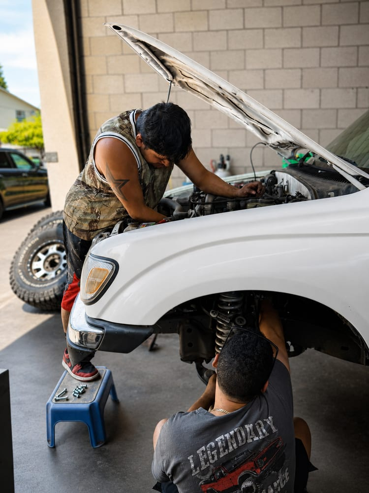

A vibration, clunk, or wandering wheel is your car telling you something specific, if you know how to listen. We find the worn part and replace exactly that, nothing more.

Suspension problems rarely fix themselves, and worn parts accelerate wear on everything connected to them. The earlier we hear the noise, the smaller the bill.
A customer brought us a 2014 Ford C-Max with a vibration in the front end. Vibration is one of the most misdiagnosed complaints in auto repair. Shops routinely sell tires, balancing, or alignments that don't fix it. We road-tested and inspected the car and found the real cause: failing front wheel bearings. We replaced both front wheel bearings and one axle, and the vibration was gone.
That's the value of diagnosing before repairing. The customer paid once, for the actual problem.
Hubs, bearings, and CV axles replaced to cure vibration, noise, and play in the wheel.
Restore ride control, braking stability, and even tire wear on cars, trucks, and SUVs.
Tie rods, ball joints, control arms, bushings, and sway bar links, all tightened up the right way.
For a short time, if it's just quietly failing. But a bearing that's loud or has play can eventually seize or let the wheel wobble, and it's already chewing up the axle and hub around it. Get it inspected as soon as you notice the noise.
You often can't from the driver's seat. That's the honest answer, and it's why we road-test and physically inspect instead of guessing. Speed-dependent hum usually points at bearings; bounce and clunks point at suspension. We'll tell you which it actually is.
Yes. Shocks degrade slowly, so you adapt without noticing. Worn shocks lengthen stopping distance, cup your tires, and make emergency maneuvers sloppier. If they're original past 80–100k miles, have them checked.
Describe the noise over the phone and we'll tell you how urgent it sounds. Then we find the real cause in the shop.
Call (503) 867-0609